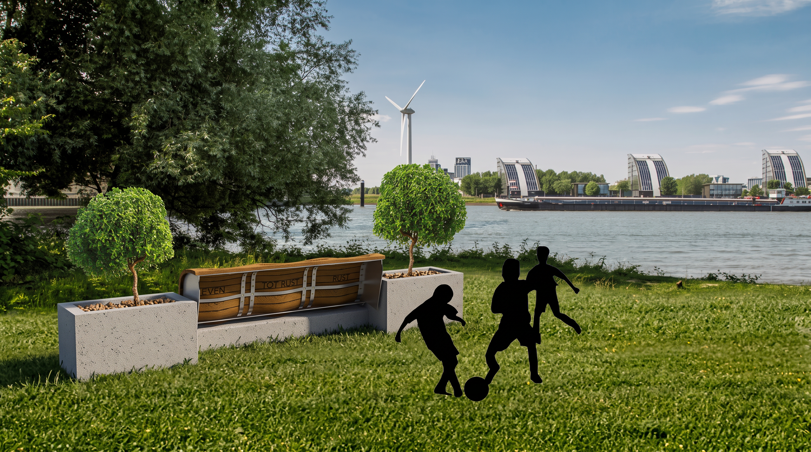
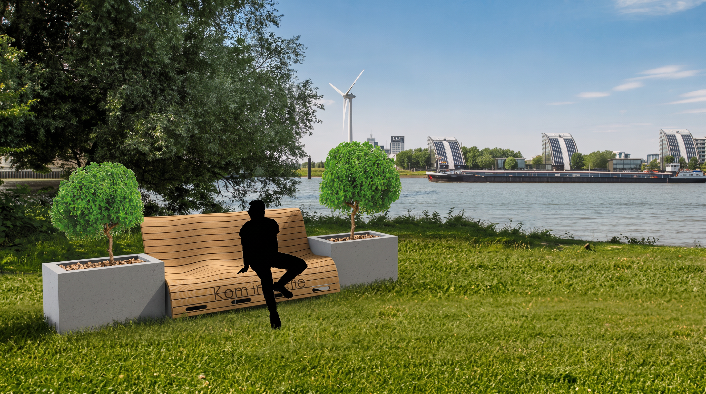
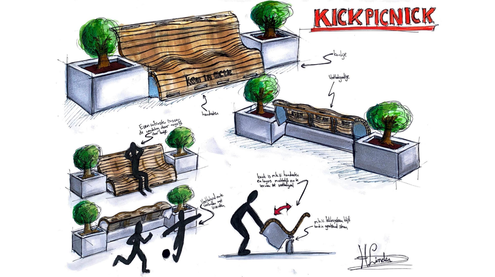
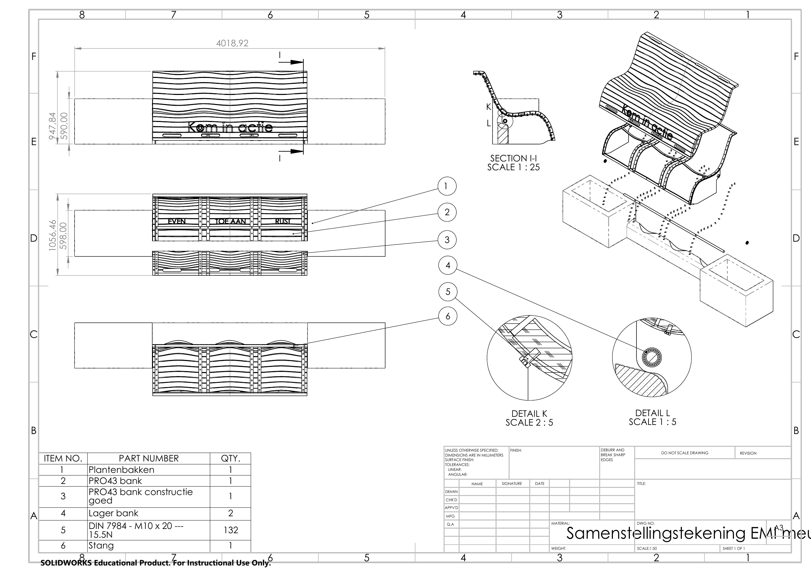

2021 · EMI
Kick
Picknick.
A public furniture concept that makes room for rest, play and everyday movement along Rotterdam's waterfront.
A bench that
invites movement.
Developed with EMI, this public-furniture concept responded to a simple question: how can an outdoor place to pause also encourage people to move?
The result combines a generous wooden seat with planters and an integrated activity side. The same object supports a quiet moment by the water as well as informal play and exercise.
One object,
two rhythms.
The seating side uses a broad, flowing wooden surface to make sitting comfortable and social. On the opposite side, the structure becomes a small activity zone, encouraging spontaneous use by children and passers-by.
The planting elements frame the bench and soften its presence in the landscape, helping the concept sit naturally in its waterfront setting.

From a lively
first sketch.
The KickPicknick sketch captured the project’s central idea early on: one landscape element that can switch between a place to sit, an object to explore and an invitation to play.

Designed to
be built.
The detailed assembly drawing translates the concept into a clear construction: a curved slatted seat, structural supports, planter boxes and standard fasteners. It was developed in CAD to test how the seat and activity elements could be brought together as one outdoor installation.
